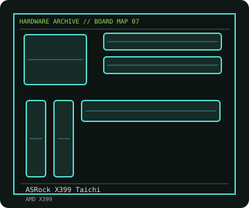

[ INDIVIDUAL COMPONENT // MOTHERBOARDS ]
ASRock X399 Taichi
TR4/X399 E-ATX workstation-class board with quad-channel DDR4, extensive PCIe lanes and firmware-qualified Threadripper support. This entry identifies one product model; revision and firmware qualifications are stated below.

IDENTIFICATION: Check the PCB silkscreen, printed revision, assembly code, and firmware identifier on the actual board. Similar model names and PCB revisions may use different specifications or firmware.
Specifications
| Catalog subcategory | Modern AMD platforms |
|---|---|
| Exact board / model | ASRock X399 Taichi |
| Era / platform | AMD Ryzen Threadripper first- and second-generation HEDT, 2017 |
| CPU and socket | Socket TR4 AMD Ryzen Threadripper 1000/2000-series processors according to ASRock's CPU support list and BIOS |
| Chipset / controller | AMD X399 |
| Memory | Eight DDR4 DIMM slots, quad-channel, up to 128 GB in the published model specification; memory speed depends on CPU and DIMM population |
| Expansion and connectivity | E-ATX; four PCIe 3.0 x16-length slots with CPU-lane allocation, three Ultra M.2 sockets, ten SATA 6 Gb/s ports, dual Gigabit LAN, 802.11ac Wi-Fi, USB 3.1 Gen2 and onboard audio |
| Firmware | ASRock UEFI; check both the processor support list and minimum BIOS before installing a second-generation Threadripper. Follow the documented update sequence. |
Compatibility and revision notes
TR4 is a large socket with a specific carrier/torque sequence; do not install by treating it like a conventional PGA socket. CPU lane count and memory topology affect the usable slot configuration. X399 Taichi is not interchangeable with X399 Professional Gaming.
Physical socket fit alone does not establish compatibility. Verify the exact processor support list, minimum BIOS, memory population rules, case dimensions, power connectors and shared-lane behavior in the cited model documentation before installation.
Preservation and repair
Inspect the socket's retention frame and pin field only with the prescribed carrier tool; keep socket protection in place when empty. Check the VRM cooling path, M.2 thermal pads and board standoffs. Record BIOS and BMC/UEFI settings before service.
For an archive record, photograph the PCB and labels before cleaning; note serial/date codes, BIOS/BMC versions, accessories, known faults, repairs, and test conditions. Use ESD-safe handling and never apply power with loose conductive hardware beneath the board.
Sources & further reading
- ASRock — X399 Taichi specifications and downloadsManufacturer model page, board specifications, manual and firmware.
- ASRock — X399 Taichi CPU support listModel-specific processor and BIOS qualification table.
Manufacturer model documentation is the primary reference; confirm the document revision and board markings when specifications vary by revision or SKU.